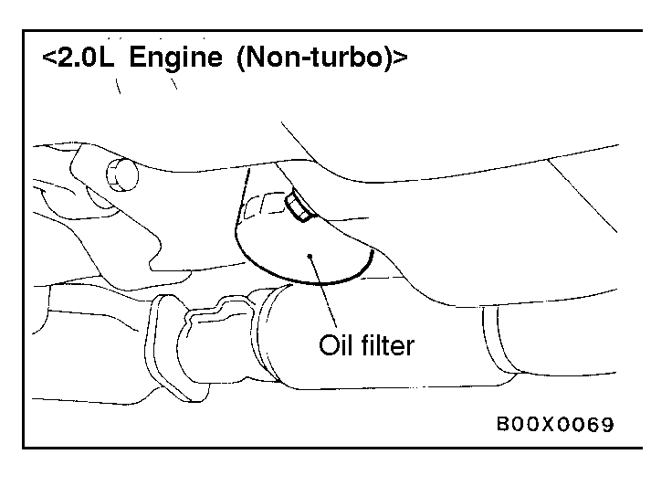
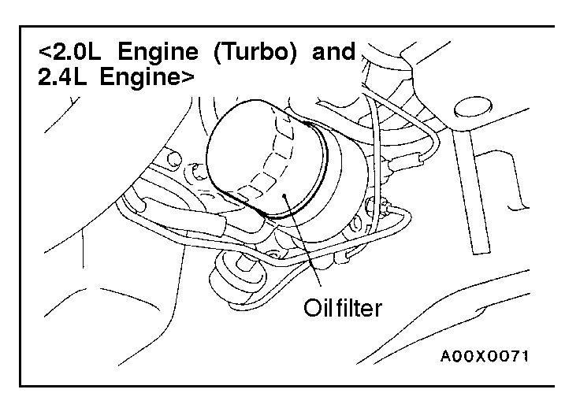
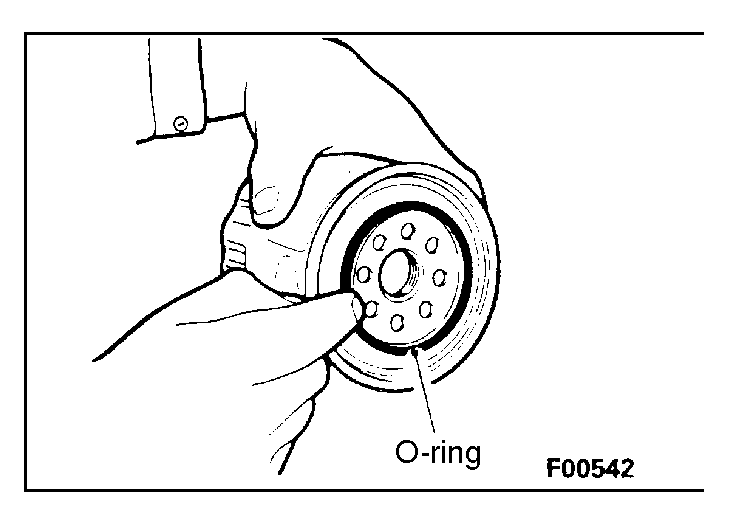

![[Previous]](https://mitsubishitechinfo.com/data/F24S/BUTTONS/fprevg.png)
![[Next]](https://mitsubishitechinfo.com/data/F24S/BUTTONS/fnextg.png)
  
10.ENGINE OIL FILTER (Replace)
The quality of replacement filters varies considerably. Only high quality filters should be used to assure most efficient service.
Genuine oil filters are capable of withstanding a pressure of 1,765 kPa (256 psi). These high quality filters are highly recommended. The followings part are available as follows.
Oil Filter Part No.
<2.0L Engine (Turbo) and 2.4L Engine>:
Mitsubishi Genuine Parts:
MD135737, MD136466, MD325714 or equivalent
<2.0L Engine (Non-turbo)>:
Chrysler Genuine Parts: M05281090 or equivalent
ENGINE OIL FILTER SELECTION
This vehicle is equipped with a full-flow, throw-away oil filter.
The same type of replacement filter is recommended as a replacement filter for this vehicle. It is possible, particularly in cold weather, that this vehicle may develop high oil pressure for a short duration. You should be sure that any replacement filter used on this vehicle is a high-quality filter and is capable of withstanding a pressure of 1,765 kPa (256 psi) (manufacturer's specifications) to avoid filter and engine damage.
The following is a high-quality filter and is strongly recommended for use on this vehicle.
<2.0L Engine (Turbo) and 2.4L Engine>
Mitsubishi Engine Oil Filter Part No. MD135737, MD136466 or MD325714
<2.0L Engine (Non-turbo)>
Chrysler Engine Oil Filter Part No. M05281090
Any replacement oil filter should be installed in accordance with the oil filter manufacturer's installation instructions.
(1)Remove the engine oil filler cap.
(2)Remove the engine oil drain plug, and drain out the engine oil.
(3)Remove the engine oil filter by using the oil filter wrench.
(4)Clean the oil filter mounting surface of the oil filter bracket.
(5)Coat engine oil to the O-ring of new oil filter.
(6)Screw on the oil filter by hand until it touches the surface of the flange and then tighten it with the filter wrench: etc.
<2.0L Engine (Turbo) and 2.4L Engine>
•For MD135737: One full turn or 14 Nm (10 ft.lbs.)
•For MD136466, MD325714: 3/4 turn or 17 Nm (12 ft.lbs.)
<2.0L Engine (Non-turbo)>
•For M05281090: 3/4 turn or 21 Nm (15 ft.lbs.)
(7)Add new engine oil through the oil filler.
(8)Start and run engine and check for engine oil leaks.
(9)After stopping the engine, check the oil level and replenish as necessary.